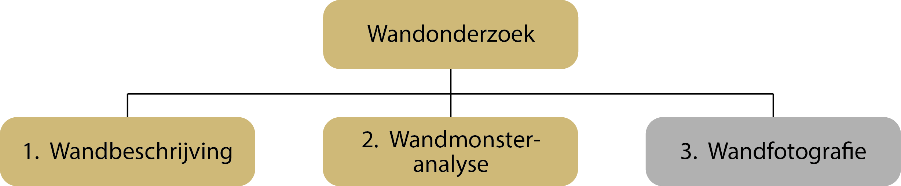

Wandonderzoek is een van de vijf registratieobjecten in het domein bodem- en grondonderzoek.
Voor de wet valt het wandonderzoek overigens onder het begrip verkenning. Een verkenning is in de wet gedefinieerd als een waarneming van de opbouw van de ondergrond op een punt, langs een lijn of in een vlak. Wandonderzoek is een verkenning op een punt.
In de basisregistratie ondergrond is wandonderzoek een registratieobject en daarmee een informatieobject. Een registratieobject is een afbeelding van de werkelijkheid en niet de werkelijkheid zelf. In de werkelijkheid wordt wandonderzoek bijna altijd projectmatig uitgevoerd. Een dergelijk project omvat vrijwel altijd ook een aantal boringen, en strekt zich over een kleiner of groter gebied uit. Voor de basisregistratie ondergrond is het object wandonderzoek altijd aan een specifieke locatie gebonden, een punt op de kaart.
Een registratieobject is de belangrijkste eenheid van informatie in de basisregistratie ondergrond. Een registratieobject bestaat uit delen (entiteiten), en de delen hebben eigenschappen (attributen). Om het wandonderzoek als informatieobject te kunnen definiëren, wordt vanuit een bepaalde benadering gedacht.
In het denken over wat het object wandonderzoek is en hoe de informatie van dat object moet worden gemodelleerd staat het begrip onderzoek centraal. Bij het begrip onderzoek moet men in essentie aan een activiteit, een proces of een aaneenschakeling van activiteiten of processen denken. Het onderzoek koppelt een resultaat aan een object van onderzoek en in het geval van de basisregistratie ondergrond is dat een deel van de ondergrond.
Waarom onderzoek een centrale plaats in het denken inneemt, behoeft wel enige toelichting omdat men in eerste instantie zou kunnen denken dat het resultaat van het onderzoek centraal moet staan omdat dat de informatie is waar het allemaal om draait. Inderdaad gaat het uiteindelijk om het resultaat van het onderzoek, dat is immers de informatie die men wil gebruiken. Maar de reden dat het onderzoek in de modellering centraal wordt gesteld, is dat wat een wandonderzoek uniek maakt niet het resultaat of het object van onderzoek is, maar dat er op een bepaald moment onderzoek is gedaan. Het is de factor tijd die het onderzoek uniek maakt.
Omdat onderzoek een aaneenschakeling van activiteiten is, kan het resultaat door een groot aantal factoren worden beïnvloed. Hergebruik van informatie is het doel van iedere basisregistratie en om dat mogelijk te maken, moeten met het resultaat de gegevens worden vastgelegd die het onderzoek als proces beschrijven. Uitgangspunt voor de definitie is dan ook dat de gegevens over het proces voldoende informatie moeten bevatten om een gebruiker in staat te stellen te beoordelen of het resultaat geschikt is voor het doel dat hij beoogt.
Om het proces te kunnen vatten zijn de eerste vragen: waarmee begon het proces dat tot wandonderzoek heeft geleid en waarmee eindigde het?
Voor de basisregistratie ondergrond begint de geschiedenis bij het uitvoeren van een opdracht tot onderzoek en eindigt de geschiedenis op het moment dat alle gegevens uit het onderzoek correct in de basisregistratie ondergrond zelf zijn vastgelegd. Gegevens over de opdracht tot het uitvoeren van wandonderzoek worden niet opgenomen. Wel wordt er bij de registratie in de BRO impliciet informatie over de opdracht vastgelegd omdat gespecificeerd wordt binnen welk kader de gegevens zijn ingewonnen.
Uitvoering van de opdracht begint ermee dat de uitvoerende instantie naar een bepaalde locatie gaat om daar te graven of een bestaande wand te prepareren.
Het feitelijk onderzoek bestaat uit een of meer deelonderzoeken: (1) het beschrijven van de wand, (2) het analyseren van monsters die uit de wand zijn genomen en (3) het maken van foto’s van de wand ()

Ieder deelonderzoek levert een resultaat en de registratie is zo ingericht dat de resultaten per deelonderzoek in de registratie ondergrond kan worden opgenomen.
Bodemkundig wandonderzoek wijkt enigszins af van dit algemene principe, omdat in het deelonderzoek wandmonsteranalyse ook enkele modelgegevens zijn opgenomen. Het gaat om de modellering van waterretentie- en waterdoorlatendheidskarakteristieken. Die modellering is een vast onderdeel van standaard hydrofysische wandmonsteranalyse en om de aansluiting op de praktijk te houden is dit modelleren onderdeel van het bodemkundig booronderzoek.
In de werkpraktijk wordt gewoonlijk geen onderscheid gemaakt tussen basisgegevens en niet-basisgegevens. De opdrachtnemer verwerkt de ingewonnen basisgegevens en levert aan de opdrachtgever een geïntegreerd resultaat dat binnen de context van een specifieke opdracht goed kan worden begrepen. Dit betekent dat de informatie die de opdrachtgever geleverd krijgt naar haar aard verschilt van de informatie in de registratie ondergrond.